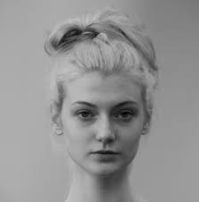
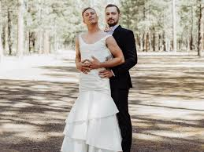

Nature photos are those that are taken of nature for example the sunset, the jungle, the fields and so on and so forth. They motly capture a wide fiels of view so as to bring a nostalgic feeling to whoever is seeing it.

Portraits are photographs that are taken upclose and most of the time include one person only .It uses the same method our eyes use where it focuses on one point and blurs out the rest in order to bring out a clearer photo.
Nature photos are those that are taken of nature for example the sunset, the jungle, the fields and so on and so forth. They motly capture a wide fiels of view so as to bring a nostalgic feeling to whoever is seeing it.
Weddimg photos are photos that are taken during a wedding and are most of the time very beautiful.Some of them consist of both portraits and nature , some portraits alone and some nature alone . They are most of the time taken for memory purposes and are very memorable.
